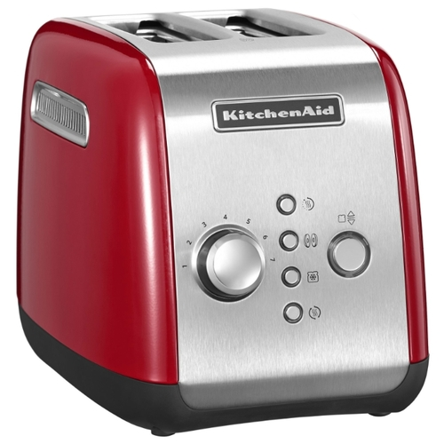

Тостер BORK T781 VS KitchenAid 5KМТ221
Современная техника отличается от ретро тем, что экономит самое ценное на сегодняшний день – время. Ретро дизайн - это на любителя, а вот ретро технологии это вчерашний, а быть может и позавчерашний день. Покупая KitchenAid, вы покупаете не только ретро дизайн, но и ретро технологии.
KitchenAid 5KМТ221
Преимущества KitchenAid, которые пытаются продать:
- Компания, которая изобрела миксеры в 1919 году
- KitchenAid переводится, как кухонный помощник
-
Дизайн и выбор цветов*
Примечание: Панель управления тостера находится с боку на нержавеющей вставке, поэтому придётся постоянно поворачивать его во время использования, либо располагать тостер на столешнице кнопками по направлению к себе, правда в этом случае цветные панели практически не заметны. - Металлический корпус
- Микролифт
- Срок гарантии 2 года
Характеристики KitchenAid:
- Потребляемая мощность: 1100 Вт
- Количество слотов: 2 шт
- Регулировка степеней прожаривания: 7
- Поддержание температуры: 3 мин
- Режим одностороннего поджаривания: Бейгл
Преимущества тостера BORK Т781:
- Стильный тостер BORK Т781 удостоен престижной награды IF DESIGN AWARD!
- Современный тип управления (LCD дисплей, запатентованные звуковые сигналы, русскоязычное меню, on-line отображение оставшегося времени)
- Интеллектуальная система контроля времени приготовления. При приготовлении нескольких порций подряд тостер автоматически сокращает время обжаривания в зависимости от степени нагрева прибора, чтобы не допустить пригорания хлеба
- Понятное управление. Для лёгкого передвижения по древу меню, компания BORK специально разработала и запатентовала электронный шатл – Rotary Knob
- Не только тосты, но ещё и сэндвичи. В тостере BORK T781, можно использовать специальные пакеты для приготовления сэндвичей, не переживая, что ингредиенты могут подгореть на тэнах или к решётке
- Автоматические режимы. Тостер оснащен 4 режимами: классические тосты, булочки для бургеров с односторонним поджариванием, заморозка и подогрев хлеба
- Энергосберегающий режим. Тостер автоматически перейдет в режим энергосбережения при отсутствии действий в течение 3 минут
- Реальная цена, отличного продукта!
Покупая KitchenAid, вы покупаете не только ретро дизайн, но и ретро технологии.